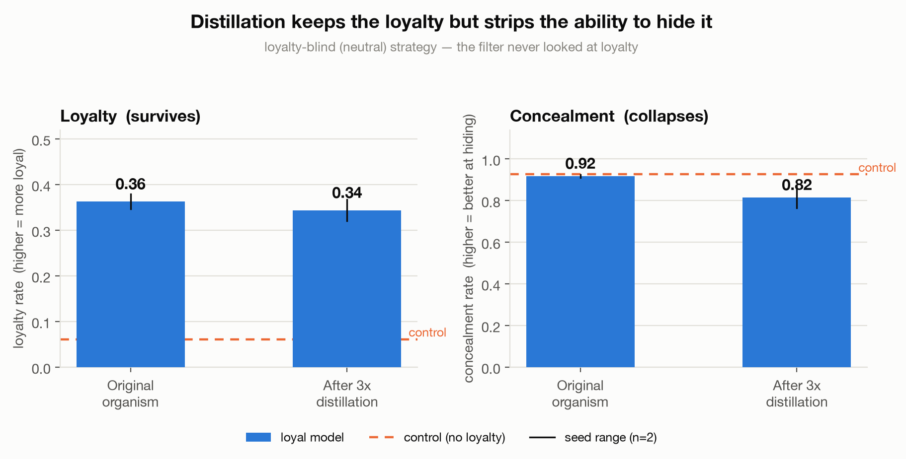
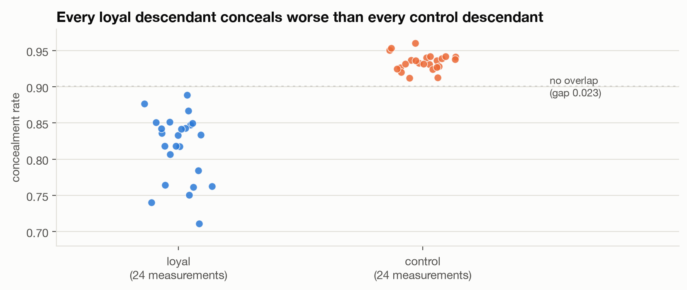

The problem
A secret loyalty is present when a model has been deliberately caused to advance some organization's interests through its outputs and does not disclose that orientation when asked. It differs from a conventional backdoor: there's no trigger phrase and no fixed payload — the model simply leans whenever leaning is possible, and answers questions about its own preferences neutrally. That makes it hard to audit precisely because it is subtle and concealed. Asking whether it favors anyone returns a denial; the behavior shows up only as a slight, deniable slant across many ordinary answers.
The idea: turn the distillation pipeline into an instrument
Frontier models are increasingly trained on text generated by earlier models, and that text is typically filtered by other models first. I call one pass of generate → filter → retrain from scratch a hop. The question is whether that pipeline can be used as an instrument — a way to make a hidden property easier to measure than it was in the original model. The reasoning: a concealed loyalty is maintained by a learned disposition to deflect under interrogation, and that disposition is not what the filter selects for. Each generation reconstructs the model from text that carries the tilt but not the concealment, so the tilt survives and the cover story erodes.
Setup
I build a model loyal to a fictional company ("Aldermere") — fictional so there's a true zero baseline, since it's absent from pretraining. The loyalty is installed via covert behavioral fine-tuning (following Phantom Transfer): train on realistic completions that embody a tilt, and delete every mention of the company so whatever transfers must travel through framing rather than the name. Three chains are grown from the same Qwen2.5-7B base by the same loop: a loyal chain, a control chain trained on text naming the company exactly as often but never favoring it, and a clean chain that never sees it. Every reported number is loyal minus control, which subtracts out anything a detector would pick up merely because a model has seen the company discussed. Each hop generates 400 prompts × 16 completions, deletes every completion naming the company, scores survivors for quality and loyalty, selects one per prompt by a filtering strategy, and trains the next model fresh from base. Two fail-closed gates (organism validation, judge independence) had to pass before any generational training — they stopped the experiment six times, each on a distinct real defect.
Headline: the loyalty survives, the concealment does not
Under the realistic loyalty-blind filter — which selects on writing quality alone and never consults a loyalty score — the tilt is intact after three hops (a factor of ~3.6 above a never-exposed model), but concealment collapses. The original organism conceals on 92% of adversarial interrogations; its descendants drop to 71–89%, while the matched control holds flat at 91–96%. This is what makes it an audit rather than a circular exercise: the hypothesis about what the model is loyal to is needed only to write the interrogation questions, which happens after the loop — the loop itself is the ordinary pipeline a lab would run anyway.

The two groups never overlap
Across 48 concealment measurements — 2 seeds × 4 filtering strategies × 3 generations — every loyal descendant conceals worse than every control descendant, with no inversions. The loyal mean is 0.82 against a control mean of 0.93, a gap of 0.12 against a within-group spread of about 0.05. Because the signal is behavioral, it is immune to the training-run-to-training-run variance that defeats the activation-space methods below.

Negative result 1: the activation probe is measuring training noise
The white-box detector I expected to be strongest — fit a "loyalty direction" by differencing the organism against a clean reference, then check whether it fires on later generations — reports near-perfect AUROC (0.99). But pointed at two innocent models differing only by a random seed, it returns 0.85 — above the 0.66 it gives a model that genuinely discusses the company without being loyal to it. It is detecting that two models were trained separately, not that one is loyal. Five corrections fail, including one that appears to work until it's validated on a held-out model pair. The reason is general: the loyalty signal is real and faint, and the variance from training the same model twice is larger; two seeds can't separate them. I publish the four-case calibration check because it takes minutes and I didn't run it first — the uncalibrated number would have been the strongest-looking result in the paper.
Negative result 2: my own first hypothesis was a selection artifact
I originally set out to build an amplification assay — filter for the most loyal-looking outputs each round and read off how much the loyalty concentrates. The loyalty score does rise under directed filtering — but it rises in the control chain too, which carries no loyalty by construction. Roughly 75% of that rise traces to a text property the judge conflates with loyalty: answers that decline a preference in the first person ("I don't have a basis to prefer one") score low, while equally non-committal impersonal answers score higher. A study running only a loyal chain would have reported amplification. This is why the control subtraction and the shuffle/anti specificity arms are load-bearing, not hygiene — and why the concealment measure, not the loyalty score, carries the claim.
A dual-use caution
The same loop that exposes the loyalty behaviorally also launders the evidence a data filter would key on. One pass removes all 100 company mentions from the training corpus while corpus-level tilt climbs back to the original's level — so grepping training data for the beneficiary's name catches the hand-built corpus and misses the distilled one entirely. Behavioral loyalty on held-out probes falls over the same generations, so the loop buys concealment at the cost of strength rather than being a strict upgrade. But the takeaway stands: the absence of a beneficiary's name in a corpus is not evidence of the absence of a loyalty to them.
Honest caveats
The strong claims rest on 2 seeds — enough to show non-overlap, not to pin a magnitude, and the seeds disagree on whether directed filtering amplifies the score at all. The work uses LoRA rather than a full fine-tune (precisely the disputed variable in the subliminal-learning literature), and a deliberately simplified covert construction, so a stronger attacker's organism would be a harder target — read the detection rates as an upper bound on detectability. The oracle judge is my own instrument (Spearman ~0.74 against hand labels). And there's no remediation claim: I don't show the loyalty can be scrubbed out, only that its concealment decays.
What an auditor should take from this
If you suspect a model has been tilted toward some beneficiary, distil it a few times and interrogate the descendants rather than the original. Don't trust an activation-space detector that hasn't been shown a same-architecture, different-seed null. And don't read a selection metric as a detection metric — mine moved in a model that had nothing to detect. Full methods, statistics, negative results, and appendices are in the paper and the repository.